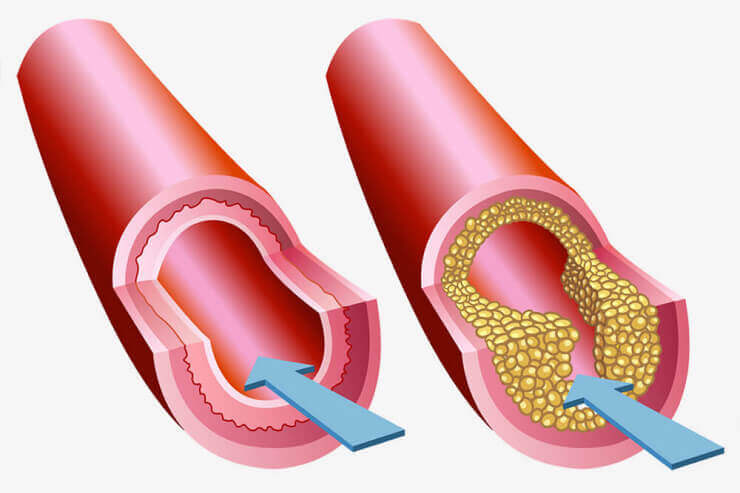
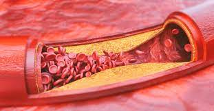
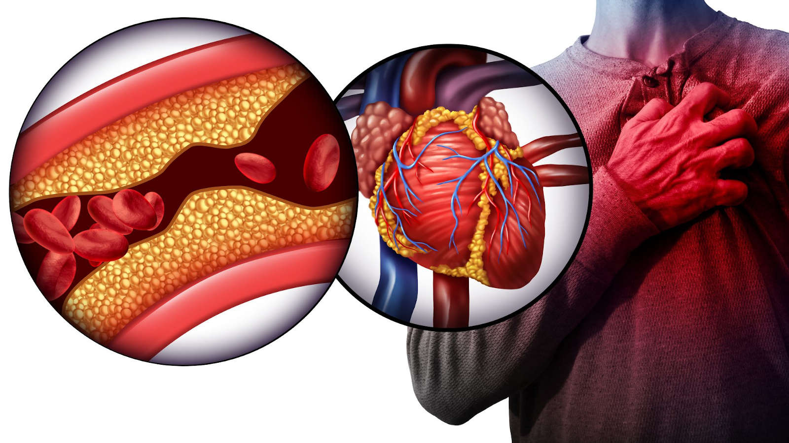
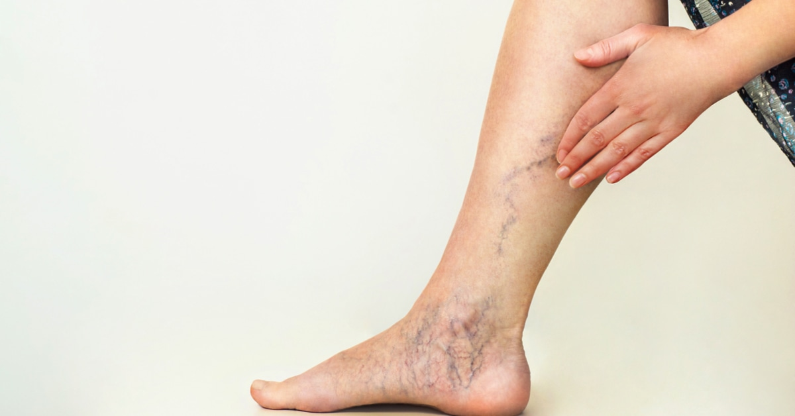
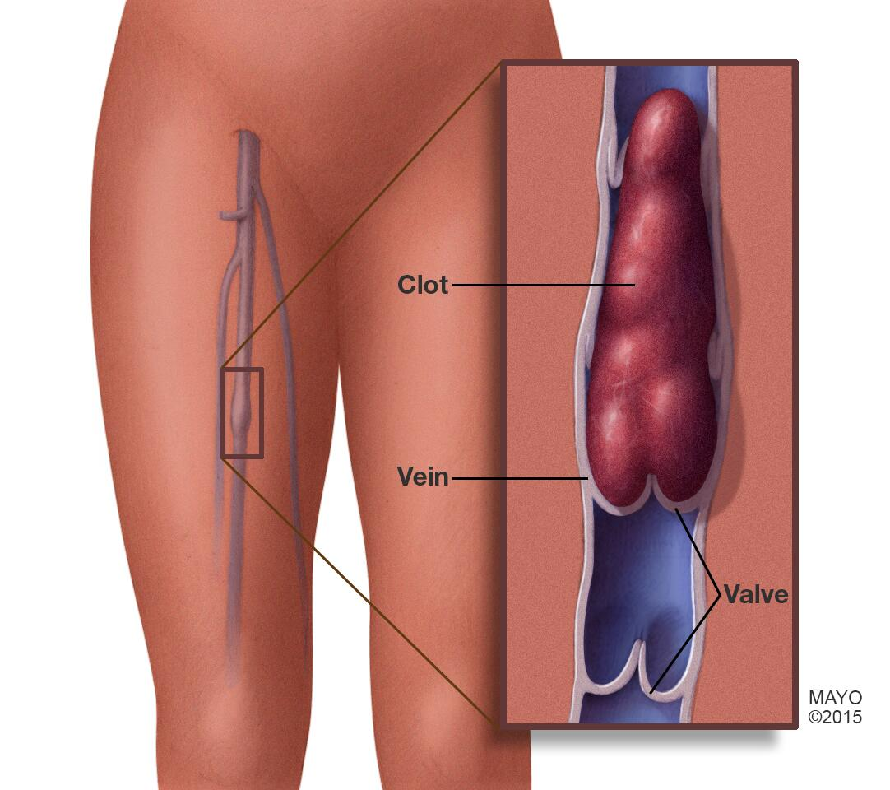
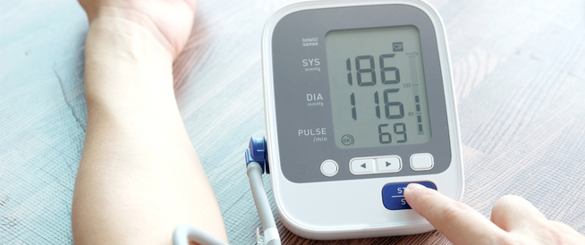
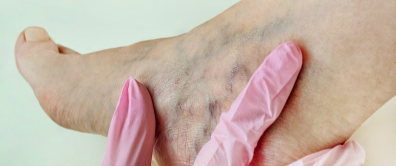
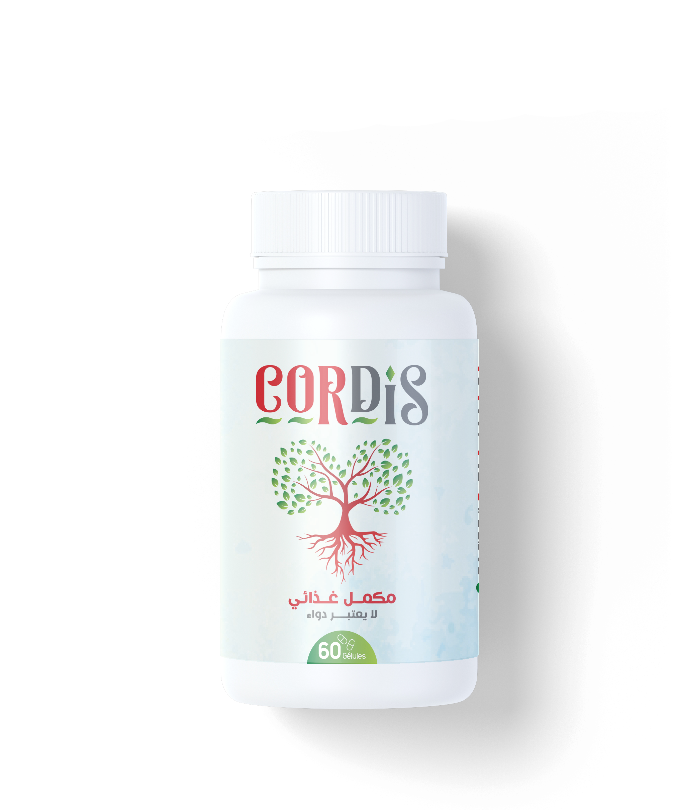
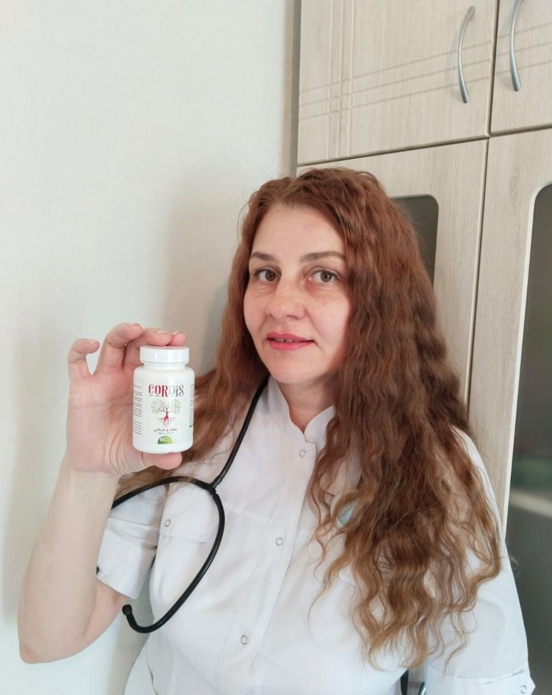

العمر لا يشكل عائقا للحياة! وداعاً لمشاكل القلب و الأوعية الدموية . لن تعاني منهم بعد الأن
تقاعد مختص ذو خبرة كبيرة ،عن عمر 70 لكنه لم يتقاعد في روحه ولا جسديًا. لأكثر من 25
عامًا وهو متقاعد، وصندوق المعاشات يكرهه بكل المعنى للكلمة! يبلغ هذا المختص الأن 95 من العمر، لكنه
يشعر بأنه في الستين من عمره ومظهره الخارجي لا يتوافق تمامًا مع ذلك.
يقول المختص أن سر طول العمر يكمن في الأوعية. فإذا كانت نظيفة وصحية، فيمكن
للمرء أن يعيش بسهولة و بدون مشاكل صحية للقلب ويشعر بصحة تامة. فعندها أكد المختص على
تصريحاته.
تمكن مراسل من إجراء مقابلة مع هذا المختص . شرح في هذه المقابلة بالتفصيل طريقته في تنظيف
الأوعية الدموية و التخلص من مشاكل القلب و مشاكل الضغط .

- المراسل : لقد أقررت مرارًا وتكرارًا بأن الأوعية النظيفة هي أساس الصحة. لماذا تظن
ذلك ؟
المختص :
- إن الموضوع بسيط. يعتمد عمل وأداء الأعضاء والأجهزة داخل الجسم على جودة الدورة الدموية. وتعني الدورة الدموية إيصال ونقل الأكسجين والمواد الغذائية إلى الأعضاء الداخلية بالإضافة إلى جمع ثاني أكسيد الكربون والإفرازات الأيضية. في الطفولة، والمراهقة والشباب، نتحرك أكثر، وتكون الأوعية بحالها فضلاً عن مرونتها ونظافتها – وتحصل الأعضاء على أقصى قدر من التغذية. ومع التقدم في السن، تصبح حركتنا أقل وتبدأ بعض الرواسب في الظهور داخل أوعيتنا. ويرجع هذا إلى العديد من العوامل، (مثل التدخين، والأكل غير الصحي، والبيئة السيئة، وأنماط الحياة )، لكن هناك بعض العوامل الطبيعية (تراكم وترسب الدهون، وهي العملية التي تحدث في جميع الكائنات الحية).
المراسل :
ما الذي يعنيه "اتساخ" الأوعية الدموية؟
تخيل بعض الأنابيب المليئة بالصدأ. ما الذي سيحدث؟ يزداد ضغط الماء، ويصبح طعم الماء سيئاً. يحدث الشيء ذاته مع الأوعية الدموية. عندما يترسب الكولسترول أو المواد الأخرى فيها، يزداد الضغط (
تعتبر الأوعية المتسخة هي السبب الرئيس في ارتفاع ضغط الدم!
)، يحتوي الدم على شوائب، والدورة الدموية متقطعة وغير منتظمة. ونتيجة لذلك تحدث التغييرات في كل أعضاء وأجهزة الجسم. حتى الجلد يعتبر جهاز بالجسم .
بمرور الوقت يهرم جسم الإنسان. وإذا كنت حريصاً وقمت بتنظيف أوعيتك الدموية، فأمامك الفرصة في ان تتخلص من مشاكل الأوعية الدموية الملوثة دون أن تشعر بألم في الأعضاء أو ألم في المفاصل وسيعمل الجسم بشكل ممتاز. بمعنى آخر، يمكن لتنظيف الأوعية الدموية أن يخلصك من جميع معاناتك المتصلة بالضغط و المشاكل القلب و الأوعية الدموية وهذه ليست مجرد نظرية. إنما اطبقها بصورة شخصية. تجاوز كل مَنْ استمعوا إلى نصيحتي هذه المشاكل بسهولة و يسر .

هكذا تتلوث الأوعية الدموية بشكل تدريجي. فإذا لم تقم بتنظيف الأوعية مطلقًا وعمرك يزيد
عن 30 عامًا، فإن الأوعية خاصتك متسخة جدًا. وهذا سرعان ما سيؤثر على صحتك، إذا لم يكن أثر بالفعل.
تنظيف الأوعية الدموية، يمكن إطالة مدى
- ما هي المشاكل التي يؤدي إليها تلوث الأوعية؟
- الجسم كله يعاني. لكن في البداية، تتضرر الأعضاء والأجهزة التي تتصل مباشرة بالدورة الدموية – نظام القلب والأوعية الدموية.
يسبب تلوث الأوعية الدموية مشاكل مثل:
-
تصلب الشرايين:
تتوقف الأوعية عن أداء وظائفها على النحو الأمثل: وتصبح الأوعية الصغيرة مسدودة تماماً، وتحتوي الأوعية الرئيسة على نسبة عالية من رواسب الكوليسترول.

-
القلب الإقفاري : وينتج عن نقص الدم بصورة منتظمة في الأوعية التاجية، والذي يتطور بدوره بسبب الشوائب الموجودة في الأوعية.

-
السكتة الدماغية : يتسبب ضعف إمداد الدم إلى النسيج الدماغي إلى موت النهايات العصبية مما يؤدي إلى فقدان بعض الوظائف.
-
ارتفاع ضغط الدم : تتسبب الشوائب الموجودة في الأوعية الدموية في تضييق التجويف وارتفاع ضغط الدم.
-
توسع الأوردة : تظهر داخل الجسم، وليس فقط على الساقين (وهو أمر يُنذر بالخطر بالنسبة للنساء). والبواسير هي نتيجة للتوسع الوريدي أيضاً .

-
التخثر أو التجلط الوريدي و الشرياني : تشكل رواسب الشوائب الموجودة في الأوعية الدموية الجلطات وتؤدي إلى موت الأوعية الدموية، مما قد يؤدي إلى موت مجموعة من الخلايا في الجسم . وإذا لم يتم إزالة التجلط وبالتالي دخوله إلى مجرى الدم، قد يحدث انسداد في الأوعية الدموية الموجودة داخل القلب، السكتة القلبية، والتي يتبعها عادةً مشاكل أكبر بكثير بعد ذلك (لا قدر الله).

يعاني الكثير من الأشخاص بسبب مشاكل القلب والأوعية الدموية وهو
أكثر من جميع الأسباب الأخرى مجتمعة معًا.يعلم الجميع ذلك ، ويعرفون أنه من الضروري تنظيف الأوعية الدموية، ولكن
يستخدم المصابين بهذه المشاكل مواد كيميائية و طرق غير مفيدة تماماً للتخلص من هذه المشاكل ومع ذلك، فلا تأثير لها إطلاقاً وحتى وإن كان فيكون تأثيرها مؤقتًا. ولا بد من تنظيف الأوعية.
الأوعية خاصتك متسخة جدًا
- هل هناك أي أعراض تمكننا من
إدراك أن الأوعية ملوثة؟
الأعراض الرئيسية ما يلي:
- وجع في العضلات والمفاصل
- التعب المزمن
- الأرق
- تدهور السمع والبصر
- الضغط المرتفع

- شحوب البشرة في الساقين

- الصداع بأنواعه
- المشكلات الجنسية
- ضيق التنفس والذبحة الصدرية
- ضعف الذاكرة
تنظيف الأوعية الدموية، ولكن لسبب ما لا
بغض النظر عما إذا ظهرت عليك أحد هذه الأعراض أم لا، بعد سن الثلاثين، فمن الضروري تنظيف الأوعية الدموية مرة واحدة على الأقل كل 3 سنوات. وبهذه الطريقة، ستنعم بصحة قوية.
تتمتع الأوعية الدموية بالقدرة على جمع الشوائب، خاصة عند كبار السن. ولهذا، ليس من الضروري تناول البرغر والبطاطس المقلية طوال اليوم. حتى بعد تناول السجق أو البيض المقلي، فإن كمية معينة من الكوليسترول ستتراكم وتترسب في خلايا الدم، والتي ستتزايد بمرور الوقت.
-ما هي الطريقة الأفضل لتنظيف الأوعية الدموية
الدموية؟
هذا التطبيع يحد
حتى وقت قريب، كانت
عملية تنظيف الأوعية الدموية تستغرق عدة أشهر. لجمع الأعشاب اوالبحث عنها في السوق أو أطلبها عبر الإنترنت ومن
ثم كان عليك ان تخلطها معاً بطريقة معينة . الآن لا يجب عليك فعل ذلك، لان العلماء إبتكروا مكمل غذائي ممتاز
سعره رخيص من شأنه تنظيف الأوعية الدموية اسمه
CORDIS . بشكل عام، الغرض منه هو تطبيع ضغط الدم و التخلص من ارتفاع ضغط
الدم، ولكن هذا التطبيع يحدث نتيجةً لتنظيف الأوعية. لذلك، هذا المنتج مناسب تماماً لهذا الغرض.

CORDIS هو منتج جيد جداً يسمح بتنظيف الأوعية الملوثة غضون أسابيع من الإستخدام المنتظم
نريد أيضًا أن نشير إلى أن هذا المنتج لا يحتوي على مواد كيمياوية، ولكن فقط مقتطفات عالية
التركيز من النباتات مفيدة من شأنها تنظيف الأوعية، وبالتالي فهو ليس غير ضار بالجسم فحسب، ولكنه مفيد جدًا أيضًا.
و جميع من إستخدمه أشاد به
فيما يتعلق بتنظيف الأوعية الدموية. وفي الآونة الأخيرة، ينصح الكثير من الخبراء بهذا المنتج ولا أحد غيره. إنه يساعد الجميع وبشكل فعال
للغاية.
أراء الخبراء

طبيبة روسية إيلينا أناتوليفنا و صورتها مع المنتج المعجزة CORDIS

الطبيب الروسي دينيس بوتوف و صورته مع عبوة CORDIS
- ما هو سعر CORDIS وأين يمكن الحصول عليه؟
CORDIS هو مكمل غذائي سعره معقول للغاية، خاصة الآن.
هذا المنتج هو المنتج الرئيسي الأن لكل المصابين بمشاكل القلب و الأوعية الدموية الملوثة
لمكافحة ارتفاع ضغط الدم. يمكن لأي شخص شراء هذا المنتج الأن في الجزائر .
المزيد حول كيفية الحصول على CORDIS مع الشحن لأي مكان
في الجزائر
للحصول على
CORDIS يجب:
- ملء نموذج الطلب في الموقع الرسمي.
- بعد ذلك، سيتصل بك مختص من الشركة الموزعة للتأكيد على عنوان التسليم
- بعد ذلك ،سيصل لك المنتج حتى باب المنزل و الدفع عند الإستلام .
للحفاظ على نظافة الأوعية، تنصح الطبيبة الروسية إيلينا أناتوليفنا بإجراء دورة تنظيف للأوعية الدموية مرة على الأقل كل سنة . وهذا مهم بشكل خاص لكبار
السن. في هذه الحالة، يمكن للمرء تحسين صحته بشكل ملموس وتأخير التقدم في السن. بعد كل شيء، الأوعية الدموية النظيفة
هي ضمان للصحة الجيدة.
التعليقات
سارة
.jpg)
شكرًا جزيلاً لك. لقد طلبت أيضًا CORDIS
عبد الله
.jpg)
أنا أحد أولئك الذين طلبوا بالفعل وجربوا CORDIS قبل ذلك ، كنت أعاني من ارتفاع ضغط الدم لمدة 7 سنوات. لم أعد أتذكر متى كانت آخر مرة تعرضت فيها لضغط طبيعي. بناءً على نصيحة صديقي ، قررت تنظيف الاوعية الدموية. بعد شهر من تناول CORDIS ، عاد الضغط إلى طبيعته واستقر. لقد مر الآن شهرين دون إرتفاع الضغط. إنه شعور مختلف تمامًا - أفضل بكثير من ذي قبل. أوصي بهذا المنتج الرائع للجميع وخاصة بهذا السعر.
.jpg)
حسام
.jpg)
جربت المكمل الغذائي CORDIS الشهر الماضي. في بعض الأحيان كان الضغط خارج عن المألوف وكنت اعاني أيضًا من عدم انتظام دقات القلب. بعد 2 - 2.5 أسابيع من بدء استعمال المنتج ، عاد الضغط إلى طبيعته. الآن أشعر أنني شخص يتمتع بصحة جيدة.
مراد
.jpg)
قرأت المزيد عن هذا المكمل على موقع الويب الخاص بالشركة.
محمد
.jpg)
راني كومنديت لي ميمتي ،صح راهم دايرين برومو،ننصح الجميع!!!
نور
.jpg)
CORDIS ورتهولي هذا منتج سحبتي و طلبت منذ ايام ،جبوهولي في 24ساعة وراني بفضل التخفيص حصلت على دورتين و هذه فوطو ديالهم👍
حسام
.jpg)
أتمني ان تكفي هذه العبوات للجميع !
محمد
.jpg)
CORDIS افضل طريقة لتخفيض الكوليسترول ليس له أي آثار جانبية لأنه مصنوع من مكونات طبيعية.
.jpg)
سامي
.jpg)
اوافق ان CORDIS منتج مثالي إنه المنتج الأكثر فعالية وبأسعار معقولة. إنه ميسور التكلفة 10 مرات مقارنة بالمنتجات الاخرى. حتى بدون الخصم. علاوة على ذلك ، فإن تأثيره أفضل .
مصطفى
.jpg)
الجميع يقول الشيء نفسه ، الطريقة الأفضل هي ممارسة الرياضة. لا تكن كسولًا ابدأ في ممارسة الرياضة ، واذهب في نزهة على الأقدام ، وتحرك ، كل شيء سيكون على ما يرام. أعلم أن الأعشاب مفيدة لصحة الإنسان. أثناء استخدامها ، من الضروري أيضًا الحفاظ على لياقة الجسم. ومع ذلك ، بهذه الطريقة لا يتعين عليك إنفاق الكثير من المال على الطرق الغير مفيدة و لكن انا جربت هذا المكمل الغذائي CORDIS و بالفعل النتائج ظهرت خلال أسابيع من الإستخدام و كنت منبهر !.
.jpg)
عائشة
.jpg)
كنت أشعر دائمًا بالتعب ودائمًا ما كنت أعاني من حالة من الخمول. لم أكن أعرف ما هي المشكلة. لقد أمضيت يومًا كاملاً لا أفعل شيئًا. لم يكن لدي شهية ، ولم أكن آكل أي شيء. كان ضغط دمي غير مستقر أبداً. كان يتحرك صعودا وهبوطا باستمرار. كنت اريد معرفة ما هي المشكلة. لقد أجريت اختبارات مختلفة وعرفت إن مستوى الكوليسترول لدي كان مرتفعًا جدًا. بالطبع هذا خطأي. لقد جئت إلى هذا الموقف نتيجة لنظام غذائي غير صحي. ثم انتبهت لما أكلته ، لم يكن الأمر سهلاً ، لكنني بدأت في تناول الطعام الصحي. إذا كنت ترغب في التخلص من الكوليسترول في أسرع وقت ممكن ، فأنت بحاجة إلى مساعدة جسمك. اشتريت CORDIS. نصحني به صديق في العمل. لحسن الحظ ، أنا الآن بصحة جيدة.
علي
.jpg)
طلبته. شكراً.
أحمد
.jpg)
اشتريت CORDIS من أجل جدتي التي تعاني من مشكلة في القلب. في هذا العمر ، لا تستطيع المرأة التسوق عبر الإنترنت بمفردها. لقد طلبته لها. على الرغم من انها كانت تعاني من مشكلة صحية خطيرة لسنوات عديدة ، إلا أن هذا المكمل الغذائي نجح معها. الآن وقد تم تنظيف عروقها ، أصبحت حياتها أسهل.
مصطفى
.jpg)
لقد قمت بالتسوق عبر الإنترنت لأول مرة في حياتي. إنه أمر سهل. لقد كتبت معلومات الاتصال الخاصة بي. بعد 5 دقائق اتصل موضف خدمة العملاء هاتفيا. لقد كان رجلاً لطيفًا للغاية. لقد أكدت تفاصيل طلبي ، مثل عنوان الشحن. قال إن المنتج سيصل لي في غضون أسبوع. هذه هي الطريقة التي تعمل بها خدمة العملاء الممتازة.
.jpg)